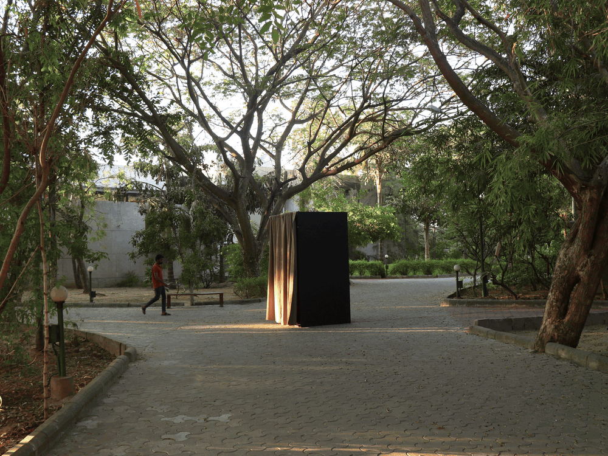
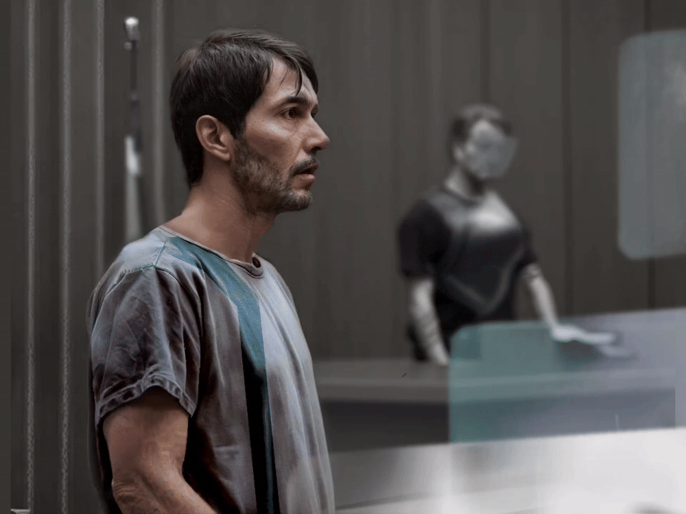
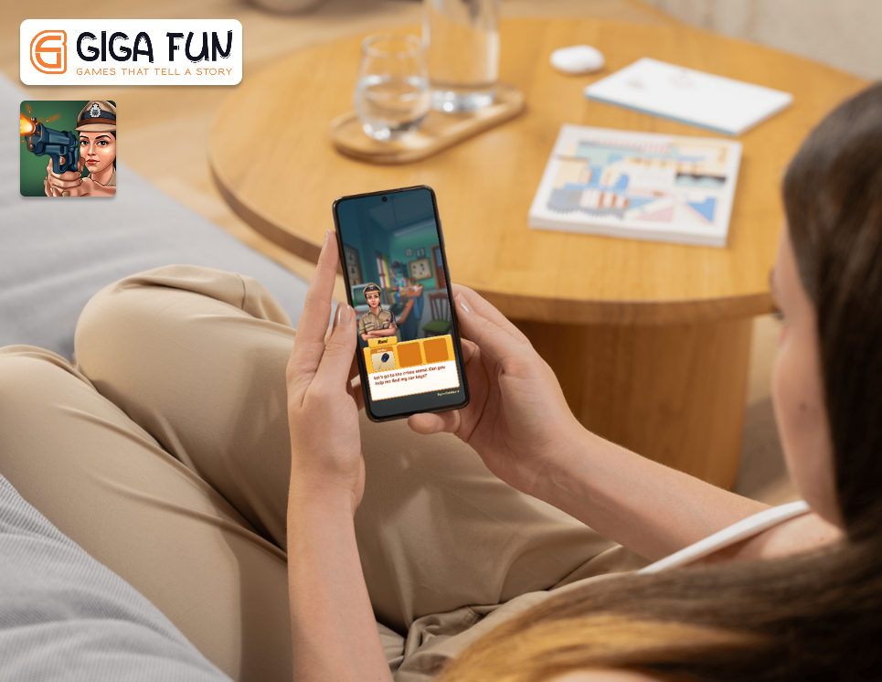
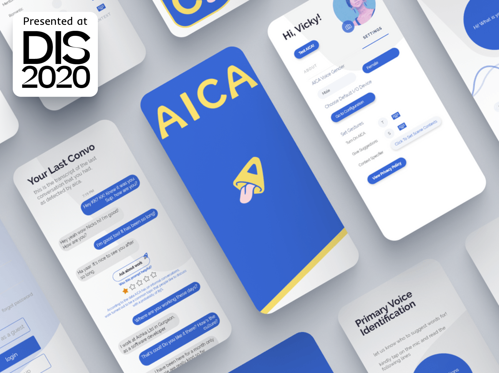
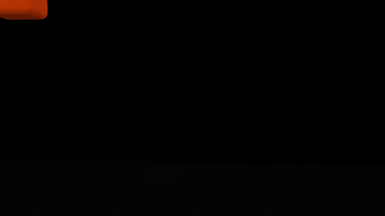

Nishtha Singhal
Interaction & Experience Designer
I design interactions and experiences across screens, physical spaces, and everyday objects. I enjoy exploring how technology shapes human behavior, and making complex systems feel intuitive, tactile, and engaging.
Background: M.Des in New Media Design (NID Gandhinagar) · B.Tech (IIIT Delhi). Research published at ACM DIS 2020; experience spanning spatial installations, speculative design, and mobile game UX at Giga Fun Studios.
Selected Projects



